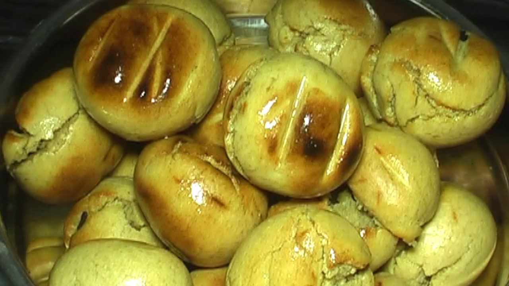

Baati

Description
This three-in-one treat dal baati churma is a typical Rajasthani treat. The Rajasthanis specialise in serving sweet and savoury dishes in combinations that steal the heart and delight the taste buds.
Rajasthani Dal Bati Churma Recipe is a very traditional recipe from Rajasthan and one if the favorites at home. The Baatis are made from whole wheat flour, sooji and ghee with the addition of ajwain that adds to the delicious flavor of the baati.
Baatis are the flatbreads or rolls as you call. They are made using whole wheat flour. Generally made in a tandoor. I do not have a tandoor so I made them in an oven as well as in a pressure cooker. Both the methods had the same result, but I would go with the oven method as it takes less time then the pressure cooker method.
The baati’s once cooked are soaked in ghee. And you will be amazed at the amount of ghee the bati absorbs. The baatis are then eaten along with the dal.
Baati’s can be stuffed too and can be made using different flours. But the basic or the traditional baati is made using whole wheat flour.
Ingredients
- 2 cups Whole Wheat Flour, (or a combination of flours)
- 1 cup Sooji (Semolina/ Rava)
- 1/2 cup Ghee
- 1 teaspoon Ajwain (Carom seeds)
- 1 teaspoon Baking powder
- Salt
Steps
- To begin making the Dal Baati Churma Recipe, we will first making the bati.
- Combine all the ingredients for the Bati together, except the jaggery until well combined. Add water to combine it well and make a smooth and yet stiff dough. Leave the bati dough aside for 20 minutes so it rests and becomes fluffy with the baking powder that we added.
- Once the baat dough is well rested, knead again for a few minutes.
-
Divide the dough in large lemon size portions (about 12 to 15 of them). Preheat the oven to 180 C and bake the bati in the oven for about 20 to 30 minutes until browned on both sides.
- Make sure to keep turning the baatis around, until it is browned from all sides. The batis will tend to crack from the top while it is baking and that's completely natural.
- Once the batis are golden brown in color from all sides, remove them from the oven.
- For the churma, I usually make it from the same baked bati balls. Take 3 to 4 of them, crush them and combine them with jaggery in a mixer to make a coarse powder. And that's it, churma is ready. The salt from the batis does not overwhelm the taste and tastes perfectly fine.
- The next step is to make the dal for the dal bati.
To make the dal, add all the ingredients into the pressure cooker, except the ingredients for the tadka
-
Add 2-1-/2 cups of water and pressure-cook the dal for two to three whistles. After two whistles, turn the heat to low and simmer for 10 minutes and turn off the heat.
Once the pressure is released completely, open the cooker and your dal is ready. Check the salt and spices and adjust to suit your taste. Transfer the dal to a serving bowl.
- The next step is to make the tadka. Heat ghee in a small pan, add the cumin seeds and red chilies. Allow them to roast and crackle. Once done, turn off the heat and pour the seasoning over the dal and serve with the hot baatis.
Serving baatis are usually done in individual portions and bowls.
- In a small serving bowl, add 2 batis, lightly crush them, drizzle some ghee over the baked baatis. Pour the dal over the baked baatis and serve. I personally like to add the churma over the baatis as well to give it a sweet touch and a delicious taste as well.
Serve the Rajasthani Dal Bati Churma for a wholesome weekend lunch or even for parties with friends.